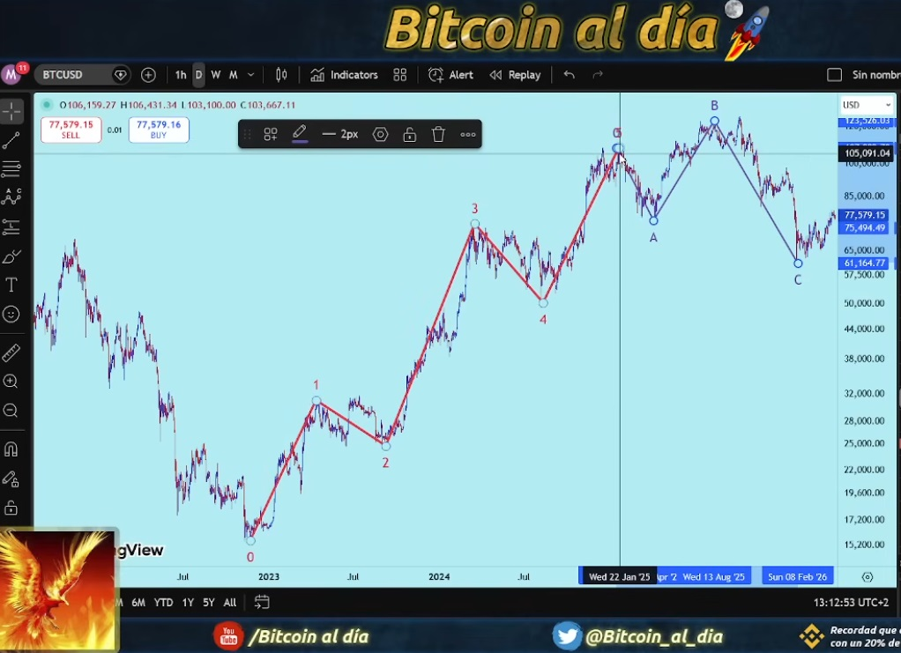
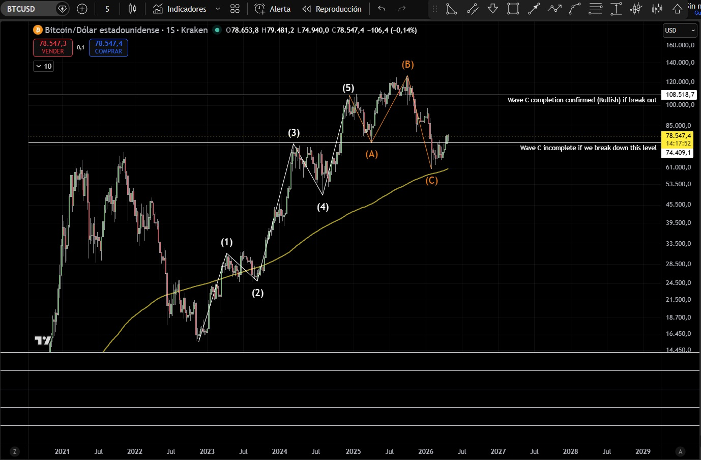
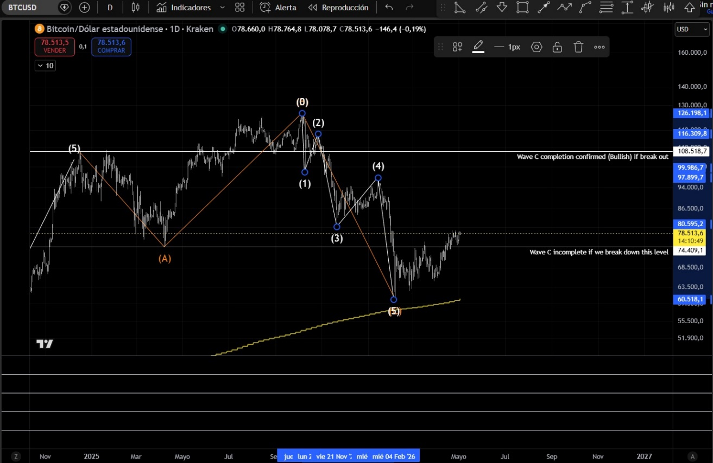
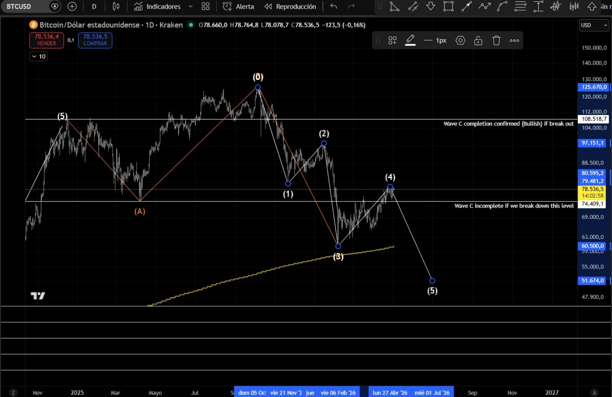
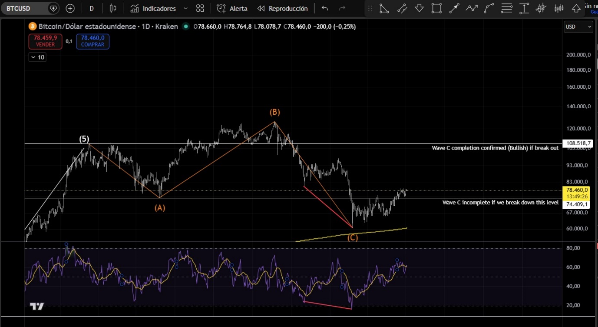
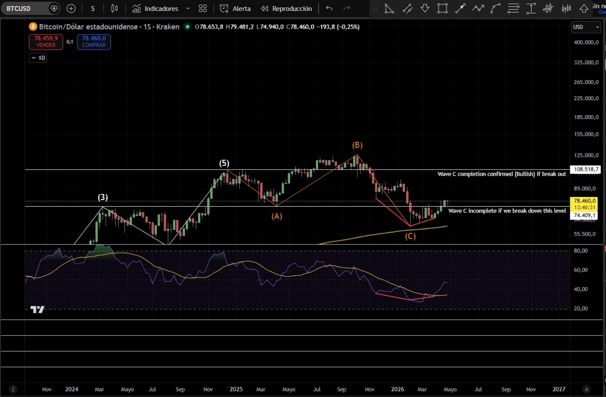
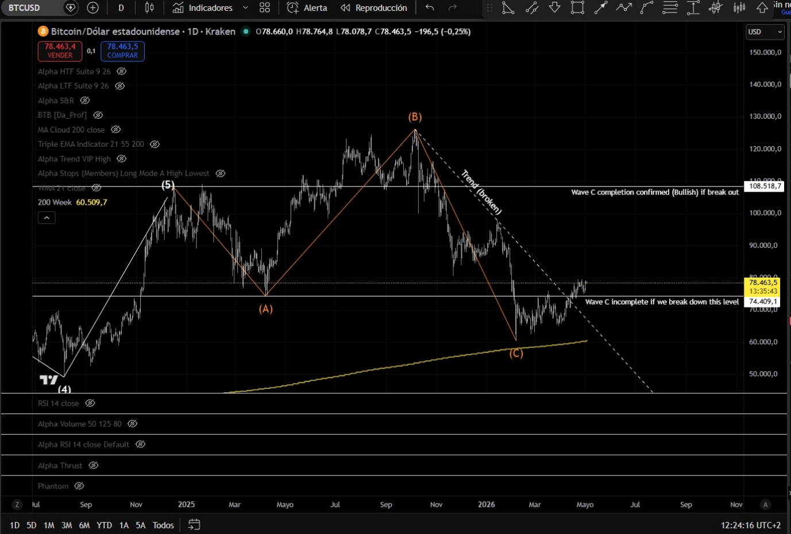

Validating the 1–5 impulse and the A-B-C correction. Operational thresholds and criteria to determine whether Wave C has concluded.
Count proposed by Miguel from the Bitcoin al Día channel
Elliott Wave analysis remains, decades after its formulation, one of the most powerful —and most debated— tools in technical analysis. Its strength lies in the fact that it does not merely describe what price has done, but proposes an internal structure that allows us to anticipate what it might do next. Its weakness is the same: the subjectivity of the count.
What follows is a rigorous validation exercise. We start from a count proposed by Miguel of the Bitcoin al Día channel on Bitcoin across daily and weekly timeframes, and subject it to the formal rules of the theory. The objective is not to confirm any thesis, but to establish what concrete evidence would distinguish a bullish scenario from a bearish one.
The count is not valuable by itself. What matters is the methodology to know when it is wrong.
The count we are analysing describes Bitcoin's structure from the lows of the previous cycle to the recent high (~$108,500) as a five-wave bullish impulse, followed by an ongoing correction of the A-B-C expanded flat type.

| Wave | Description |
|---|---|
| Wave 1 | First impulse from cycle lows. Sets the direction of the major trend. |
| Wave 2 | Deep correction, without exceeding the origin of Wave 1. Confirms the structure. |
| Wave 3 | The most extensive impulse. Generally the longest and most volatile wave of the cycle. |
| Wave 4 | Sideways correction. Does not penetrate Wave 1 territory. Alternation pattern with Wave 2. |
| Wave 5 | Final impulse. Cycle high at ~$108,500. Origin of the A-B-C correction. |
After completing Wave 5, price begins a correction we classify as an expanded flat (3-3-5). In this pattern, Wave B exceeds the Wave 5 high of the preceding impulse —which is not only permitted but is the defining characteristic of the expanded flat— and Wave C completes the correction with a five-sub-wave move ending below the Wave A low.
For more detail on the rules of Elliott corrective patterns: bullwaves.org — Complete Guide Elliott Wave Correction Patterns.
| Wave | Rules and notes |
|---|---|
| Wave A | Three internal sub-waves. In this count: from ~$108,500 to ~$74,400. |
| Wave B | Three internal sub-waves. Can —and in the expanded flat, must— exceed the Wave 5 high (~$108,500). In this count it reached ~$125,600. This does not invalidate the pattern; it is its defining characteristic. |
| Wave C | Five internal sub-waves. Must end below the Wave A low (~$74,400). Indicative target: 162% of A's length, in the ~$69,000–70,000 zone. |
Bitcoin's current price (~$78,000 at the time of this analysis) sits in an ambiguous zone: below the Wave 5 high and above the Wave A low. This position neither confirms nor invalidates the conclusion of Wave C.
Two price thresholds define the boundaries of the scenario and act as primary binary criteria:

| Criterion | Level | Interpretation |
|---|---|---|
| Bullish | > $108,500 | Break above the Wave A origin (Wave 5 high). The corrective wave is formally concluded. The A-B-C correction has ended and the market resumes the major bullish impulse. |
| Bearish | < $74,400 | Break below the Wave A low. Wave C continues to develop with additional downside, with the possibility of visiting new lows. |
| Ambiguous | $74,400–$108,500 | Zone where price can move without confirming or invalidating the scenario. Any categorical statement within this band would be confirmation bias. Complementary criteria are required. |
Given that the range between $74,400 and $108,500 is operationally too wide, four additional criteria can be applied to obtain early signals of whether Wave C has concluded or is ongoing. None is definitive on its own. Their confluence is.
Wave C must complete in five bearish sub-waves from the Wave B high (~$125,600). If five complete sub-waves can be counted, C has formally ended, regardless of the exact price. If only three can be counted, C has almost certainly not concluded.
This is where we once again run into the subjectivity of the count. We could quite easily count 5 waves as follows:

And conclude that Wave C unfolds in a 5-wave sub-structure, validating the idea that it has concluded.
But we could also produce the following count:

This latter case would force us to conclude that Wave C has not yet ended and that a sub-wave 5 to the downside could still unfold. A break of $74,400 to the downside would give a possible signal of this possibility, which would be confirmed by a break of $61,000.
As we can see, this first criterion remains undefined since it is based on the subjectivity of the count, although the structure will tell us which interpretation is more likely. If we are in Wave 1 of the next bullish impulse, we must see an impulsive structure and not a sideways or zigzag one.
It is common to resolve ambiguous situations through the RSI indicator, by studying whether any type of divergence occurs that might signal a direction.
However, no RSI divergences are observed on the daily or weekly charts.


A divergence would mean that while price makes lower lows, the RSI shows higher lows (bullish divergence), or vice versa (bearish divergence). But these circumstances do not appear on either the daily or weekly chart. So this second criterion does not appear conclusive either. However, the absence of divergences is a good sign, as no bearish divergences are apparent in the potential Wave 1 we may be forming.
At the start of the move, during February, a small bearish divergence was visible on the weekly chart, where price was making higher lows while the RSI was making lower lows. However, that divergence has been cancelled since early March, where the RSI resumes making higher lows alongside price. A cancellation of the bearish divergence could be interpreted as a sign of strength, although we would not use it as a standalone valid operational indicator.
The length of Wave A (from ~$108,500 to ~$74,400) amounts to approximately $34,000 of decline. Projected from the Wave B high (~$125,600):
This price zone has already been pierced, so this criterion does indicate that Wave C could perfectly well be complete.
Here we see a clear signal.
The bearish trend line of Wave C has been broken since early April.

This signal occurs before price reaches the $108,500 threshold and allows anticipating the reversal with a shorter stop distance. It is the earliest of the four criteria, but also the most prone to false positives.
The confluence of three or more of these four criteria around the same price level is where the probability of Wave C's end reaches its maximum. No single criterion alone justifies a position. The combination of complete 5 sub-wave structure within Wave C (subjective) + price in the 162% of A zone + break of the downtrend line constitutes a higher-reliability signal within this analytical framework.
| Level / Criterion | Signal | Interpretation |
|---|---|---|
| > $108,500 | Bullish | A-B-C completed. Expanded flat concluded. Major impulse resumed. |
| < $74,400 | Bearish | Wave C in development. Next target: $69,000–70,000 zone. |
| 5 complete C sub-waves | Structural | C formally completed. Higher-reliability signal, but subject to counting subjectivity. |
| No bearish divergence on weekly RSI | Confirmation | No additional bearish signal. Reinforces end of C if it appears alongside other criteria. |
| Price in $69,000–70,000 zone (already reached) | Target | 162% of A from Wave B high reached. Fibonacci confluence fulfilled. |
| Break of C downtrend line (already occurred) | Early | First reversal signal. Occurred in April. Subject to false positives. |
| $74,400–$108,500 (no binary signal) | Ambiguous | Zone without definitive criterion. Requires complementary criteria. |
The proposed count —1–5 impulse followed by A-B-C expanded flat correction— is formally valid under Elliott's rules, with one important caveat: the internal structure of the final Wave C admits two readings (3 or 5 sub-waves), and only the 5 sub-wave version maintains the idea that it has concluded. This is the weakest point of the count.
The current price (~$78,000) sits in an ambiguous zone. The two binary thresholds —$108,500 to the upside and $74,400 to the downside— remain the ultimate arbiters of the scenario. The four alternative criteria are tools to reduce operational uncertainty within that band, not to eliminate it.
Wave analysis does not predict the future. It defines the structure within which we interpret what price does, and establishes precisely when that structure is refuted. That is its real utility.
In technical analysis, we never speak of certainties, only possibilities. We interpret signals and align ourselves with the most probable scenario.
There are signs that Wave C has concluded, but there is no certainty. If a flexible position can be maintained, we could open a long position under the stated premises (we are at the start of Wave 1 of the next bullish impulse) with invalidation (stop loss) below $74,400.
If what you are looking for is long-term Bitcoin exposure, simply understand this zone as a good accumulation zone, even though there is a possibility of visiting lower levels. From this perspective, buy here and don't panic, but don't exhaust all your capital. Keep buying if it continues to show strength, and if it breaks $74,400 wait to accumulate at levels below the $60,000 low already marked.
Comments · Comentarios · Kommentare · Megjegyzések